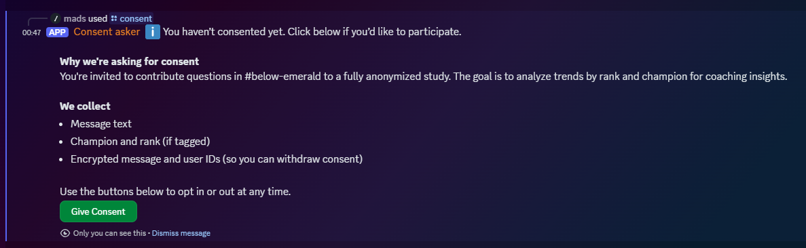
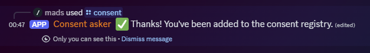

Analyse av spørsmål i coaching plattform
Kort oppsummering
På denne siden beskriver jeg mine erfaringer fra et prosjekt der jeg forsøkte å bidra til en League of Legends-coachingplattform, med innsikt generert fra deres tilgjengelige tekst-data fra kunder på plattformen. Jeg utviklet en bot som benytter Discord sin API for å håndtere opt-in samtykke blandt brukerne, samt samling og kryptering av deres data. prosjektet stanset dessverre rett før produksjonssetting, grunnet interne policybegrensninger.
Problemstilling
Mid Lane Academy (MLA) er en coaching plattform for det massive og kompetitive videospillet League of Legends. Tjenesten består av seks lønnede coaches som lager innhold, gir coaching, og svarer på spørsmål. Videre bistår et titalls frivillige mentorer med å svare på spørsmål. Tjenesten har hundrevis av kunder som samlet sett betaler en månedspris for alt sammen.
Tradisjonelt har league of legends coaching forekommet i form av selvstendige næringsdrivende som tar på seg oppdrag med kunder, gjerne har de samlet seg klientell som innholds skapere. MLA konseptet står i skarp kontrast med tradisjonell coaching, der både coaches og klientell samles på samme plattform, med et større rekkevidde av tjenester tilbydd, og innebygd kost-effektivitet som tillater et billigere tilbud for kunder.
Konseptet har også fordelen av å samle store mengder epistemiske data rundt League of Legends på en og samme plass, som mulig kan analyseres for trender som tolkes av beslutningstakere i utvikling av tjenester og innhold. Sentralt i prosjektet var å utvikle en løsning som samler slik rådata i tråd med GDPR reglement, klar for videre prosessering og innsikt.
Løsning
MLA benytter seg av infrastrukturen til Discord, som er en dominerende sosial plattform som tillater kommunisering blandt annet gjennom tekstmeldinger i virtuelle miljøer kalt servere. Discord tilbyr også et API som gjør det mulig å programmere såkalte Discord-bots. Disse er blandt annet sentralt i moderering av store servere med tusenvis av medlemmer gjennom f.eks filtrering av alle tekstmeldinger sendt. For prosjektet programmerte jeg opp en bot som tilrettelegger for at brukerne kan gi eller trekke sitt samtykke. Den fører også et oppdatert register av brukerne som har gitt sitt samtykke, fører logg av samtykke interaksjonene, og samler inn rådataen fra samtykkende brukere. Spesifikt siktet prosjektet mot at botten skulle samle inn meldings-innhold fra en dedikert kanal for spørsmål som rådata, med videre muligheter for prosessering av rådataen med verktøy som som dbt.
Arkitektur
Prosjektet er bygget i Python med discord.py for bot-interaksjon.
Samtykkedata og meldingsinnhold lagres kryptert i en lokal SQLite-database.
Brukeridentifikatorer hasjes med SHA-256, og meldingsinnhold krypteres med AES-256.
Botten er designet for å kjøre som en manuell prosess der kun eksplisitt samtykkende brukere blir lest.
All funksjonalitet er modulært implementert, med fremtidig støtte for PostgreSQL og dbt-basert
datamodellering.
Kildekoden er tilgjengelig på GitHub: message-parse-discord-bot.
Samtykkeprosessen i praksis
For å sikre GDPR-samsvar implementerte jeg en tydelig og reversibel samtykkeflyt i Discord. Brukere kunne når som helst samtykke eller trekke samtykke gjennom en enkel knapp i et privat svar fra botten.
1. Bruker har ikke samtykket enda
2. Samtykke bekreftet
3. Bruker som tidligere har samtykket

Utfall
Prosjektet fikk god mottakelse blant ledelsen og ble vurdert grundig, men ble til slutt ikke satt i produksjon på grunn av policybeslutninger rundt forenkling av brukeropplevelsen og reduksjon av Discord-bots. Likevel demonstrerer arbeidet en komplett teknisk leveranse, inkludert sikkerhet, samsvar med regelverk og samarbeid med eksterne beslutningstakere.